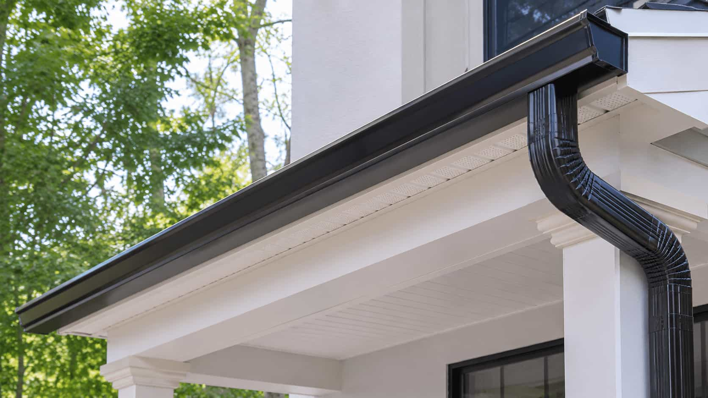

Water near foundation
Water discharging too close to the home can lead homeowners to compare downspout and drainage-related options.
Gutter service category
Start a structured request for downspout extensions, water direction, drainage concerns, or foundation-adjacent water flow.
Eavora is an independent provider-matching platform. Eavora does not perform drainage work, install systems, inspect properties, sell products, or warranty provider work directly.


Downspout and drainage overview
Eavora helps homeowners organize downspout and drainage-related requests involving water draining too close to the foundation, poor flow direction, missing extensions, pooling, splash areas, and exterior water-control concerns.
Request reasons
These examples help frame the drainage category. Final recommendations, scope, timing, pricing, and terms come from independent providers.
Water discharging too close to the home can lead homeowners to compare downspout and drainage-related options.
Downspouts may need a provider-supplied discussion around discharge direction, extensions, or placement.
Pooling near walkways, landscaping, basement areas, or low spots can be described in the request details.
Some drainage concerns may be connected to clogged gutters, repair needs, poor slope, or blocked downspouts.
Homeowner control
Submitting a request through Eavora does not require hiring a provider. Review provider-supplied drainage details first.
Before you choose
Before continuing with any provider, homeowners may ask about downspout extensions, discharge direction, splash blocks, buried lines if discussed, gutter flow, clogged areas, property slope, landscaping access, warranty information, licensing, insurance, and scheduling.
If the issue starts with leaking or sagging gutters, repair may fit better. If overflow comes from debris, cleaning may be the better starting category.
Drainage insight
Homeowners can describe where water exits, where it collects, what happens during heavy rain, and whether gutters or downspouts seem blocked.
Foundation-adjacent water, pooling, and poor discharge direction help frame the drainage conversation.
Blocked downspouts, loose sections, or clogged gutters may affect the provider-supplied discussion.
Ready to start?
Submit the basic details and compare available provider-supplied options before deciding whether to continue.
Downspout & Drainage FAQ
These answers explain the Eavora platform role and what homeowners may want to compare.
No. Eavora is an independent provider-matching platform. Eavora does not perform drainage work, install systems, inspect properties, sell products, or warranty provider work directly.
You can describe where water exits, where it collects, whether downspouts are missing extensions, whether gutters overflow, and what happens during heavy rain.
Not always. Drainage focuses on water direction and downspout discharge. Repair focuses more on leaks, sagging, loose sections, and gutter condition.
Independent providers supply their own assessment, options, pricing, scheduling, warranties, and terms. Homeowners decide whether to continue.
No. Submitting a request does not require hiring anyone. Homeowners decide whether to continue after reviewing provider-supplied information.